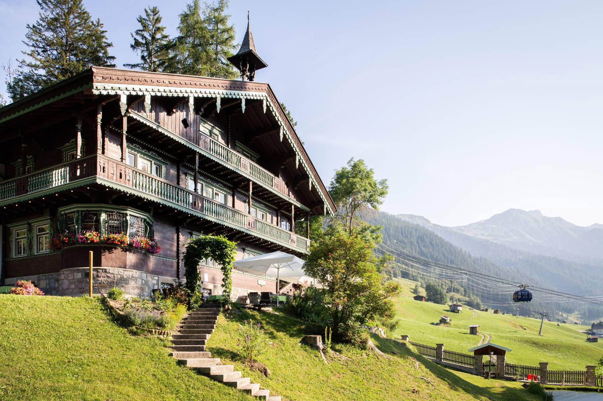
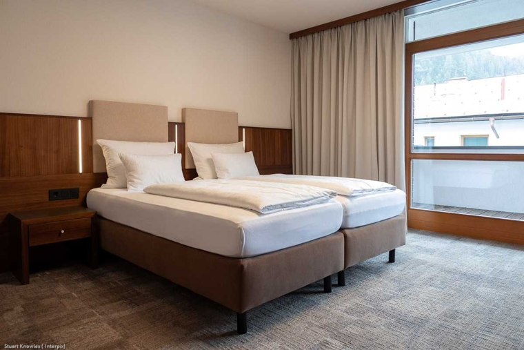
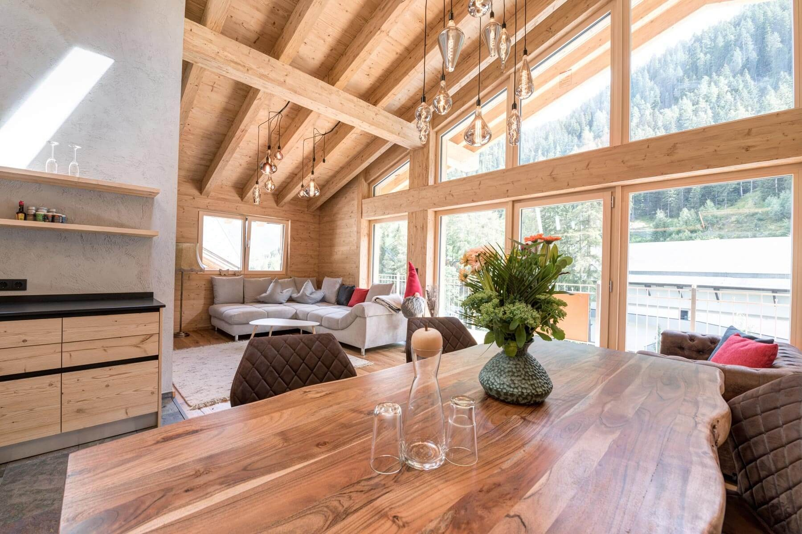
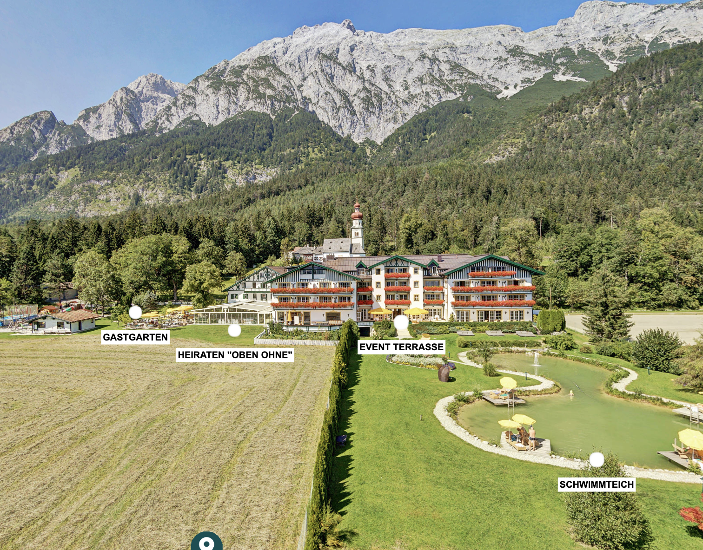
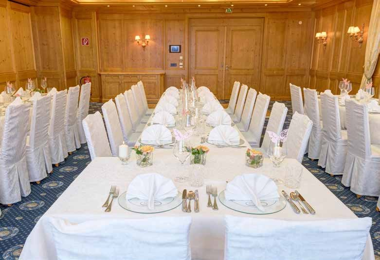
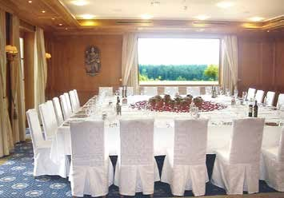

适合我们的地方
- 花园、晚宴和酒店都在原地，换场方便。
- 邮件确认婚宴不绑定住宿，宾客可住一晚或两晚，也没有餐饮最低消费。
- €75 的四道菜已经含摆台、准备与宴会厅基础服务。
T I R O L · 2 0 2 7
我们正在比较三处蒂罗尔场地。页面以 50 位宾客为基准列出预算，婚礼地点和日期仍待确认。
地图加载中。也可以使用下方地点链接。
| 比较项 | Kohlerhof ↗ | Museum Restaurant–Café ↗ | Speckbacher Hof ↗ |
|---|---|---|---|
| 场地类型 | Fügen · 山谷度假酒店 | St. Anton · 历史别墅餐厅 | Gnadenwald · 山景婚礼酒店 |
| 海拔参考 | 约 550 米 Fügen 镇 545 米 | 约 1,300 米以上 St. Anton 镇 1,304 米，场地略高于镇中心 | 约 890 米 以酒店对面的 St. Martin 为参照 |
| 五月初户外 | 海拔最低，白天户外较值得考虑，仍需雨备 | 三家中海拔最高，早晚可能偏冷，优先考虑室内方案 | 比 Museum 低，五月初可考虑户外，仍需备选 |
| 2027 年档期 | 6 月 12 日暂留 | 6 月 12 日、19 日暂留 | 4 月 30 日、5 月 1 日、8 日、6 月 5 日、12 日曾报可选，需复核 |
| 50 人估算 | €6,332–6,760 按 2027 婚宴邮件和餐单估算，含仪式搭建 | €6,683–7,530 按现有菜单和酒单估算，仪式费待核 | €7,093–7,457 按 2025/26 婚礼手册与 2026 餐单估算，专属吧台另计 |
| 空间与雨备 | 花园仪式、Gartensaal 晚宴；雨天室内方案待定 | 池塘或花园仪式，壁炉大厅雨备；晚宴可能分房 | 草地与池塘、Saal Theres、露台；雨天布局待核 |
| 户外视野 你们的印象 | 花园与宴会厅相邻，换场方便 | 别墅环境独立安静，池边仪式区较局促，视野较收 | 三家中户外仪式区的山景最开阔 |
| 从慕尼黑出发 | 开车约 1¾–2 小时 火车约 2½–3 小时至 Fügen-Hart | 开车约 2½–3 小时 火车约 3½–4½ 小时至 St. Anton | 开车约 1¾–2¼ 小时 火车约 2¼–3 小时至 Hall in Tirol |
| 从苏黎世出发 | 开车约 4 小时 火车约 4½–5 小时至 Fügen-Hart | 开车约 2½ 小时 直达火车约 2½–3 小时至 St. Anton | 开车约 3¾–4 小时 火车约 4–4½ 小时至 Hall in Tirol |
| 火车到站后 | 距酒店约 1.2 公里，可安排接驳 | 镇中心下车，可步行至场地，带行李可打车 | 距酒店约 7 公里，接驳或出租车更方便 |
| 住宿 | 同址酒店可选，或步行两分钟的 Pension Kohler | 场地无客房，镇上多家酒店步行可达，需核对开业日 | 同址酒店及 Michaelerhof；Hall in Tirol 备选，多数需车接驳 |
| 最需要核对 | 酒水按实耗、菜单调整、午夜加时 | 两个周末的酒店房量与开业日、50 人座位布局与停车 | 2027 年书面总报价、房量和 10% 附加费范围 |
已逐项核对餐酒单价及预算公式。三家总价是 50 人的用量估算，均未计住宿；仪式及附加费口径各异。Museum 和 Speckbacher Hof 的参考单价仍需确认 2027 年是否适用。
交通时间从市区或主火车站起算，机场位置另见上图。火车时间到所列车站，末段接驳单列。时间为筹备估算，需按 2027 年日期查车次。五月初的体感是按海拔差异作的筹备判断，仍要看当天的气温、风雨和日照。
Fügen · Zillertal
度假酒店的花园和 Gartensaal 相邻，适合草地仪式、室内晚宴和留宿。花园大厅官网容量最高 150 人，本次咨询约 50 人。
2027 年 6 月 12 日 暂时保留
场地官网与照片 ↗Hochfügener Straße 84, FügenFügen 镇海拔 545 米。五月初可考虑白天在花园办仪式，室内雨备仍需确认。
四道菜 €75/人。可选牛肉清汤或芦笋浓汤、混合沙拉、猪里脊或烤三文鱼或素食主菜，甜点为草莓 Panna Cotta。估算含三件小食/人、六瓶 Sekt 和 €350 户外仪式搭拆。
| 饮料口径 | 酒水 / 人 | 50 人估算 |
|---|---|---|
| 偏软饮 | €28.94 | €6,332 |
| 较多酒精饮料 | €37.50 | €6,760 |
迎宾 Sekt €35/瓶，婚宴红白葡萄酒 €30/0.75 L。仪式搭建不含装饰；午夜加时、额外消费与住宿另计。
场地邮件已列明 · 四道菜 €75/人、Sekt €35/瓶、婚宴红白酒 €30/0.75 L、仪式搭拆 €350，小食示例 €3.50、€3.80、€4.50，午夜加时 €80/小时。
餐单已核 · Cola 等 €5.80/0.5 L，Zillertal Helles €5.90/0.5 L。晚宴红酒按邮件里的婚宴瓶价计算。餐单，第 24 页 ↗
50 人推算 · 正餐 €3,750 ＋ 小食 €575（每人两件 €3.50、一件 €4.50）＋ 六瓶 Sekt €210 ＋ 实耗酒水 €1,447–1,875 ＋ 仪式 €350。加时和额外消费另计。
| 出发地 | 开车到场地 | 火车到站 |
|---|---|---|
| 慕尼黑 | 约 1¾–2 小时 | 约 2½–3 小时，经 Jenbach 换 Zillertalbahn 至 Fügen-Hart |
| 苏黎世 | 约 4 小时 | 约 4½–5 小时，通常经 Innsbruck、Jenbach 至 Fügen-Hart |
Fügen-Hart 站距酒店约 1.2 公里。酒店可协助安排 Jenbach 站、慕尼黑机场或因斯布鲁克机场接驳。对从慕尼黑自驾的宾客较方便。
时间为市区或主站出发的筹备估算。Kohlerhof 官方交通 ↗ · ÖBB 查车次 ↗
宾客可直接住场地酒店。若想压低住宿成本，先核对附近旅馆团体房量与那周的报价。以下价格来自笔记与询价，距离为笔记估算。
Google 地图评分和评价数查于 。
同址 · €115/人/晚，含早餐。单人房加 €30；同价可住一晚或两晚，婚礼当晚套房赠送。
步行约 2 分钟 · 11 间。双人房 €150/房/晚，单人 €85/晚，需锁房。
车程约 4 分钟 · 约 30 间。参考 €113–126/房/晚，不含早。6 月 12 日所在周暂无法给团体报价。
另一备选 KOSIS Sports Lifestyle Hotel，笔记参考距场地约 1 公里、约 €172/晚，日期和房量待核。 Google 地图 4.6/5 · 728 条评价 ↗

St. Anton am Arlberg
历史别墅、滑雪博物馆与山间餐厅。花园池塘适合仪式，露台做迎宾，历史餐室做晚宴，壁炉大厅可作为雨天备选。
2027 年 6 月 12 日、6 月 19 日 两个日期暂时保留
场地官网与照片 ↗Rudi-Matt-Weg 10, St. Anton am ArlbergSt. Anton 镇海拔 1,304 米，场地略在镇中心上方。五月初早晚可能偏冷，壁炉大厅可作为仪式备选。
参考四道菜 €79–84/人。Menu 2 有牛肉塔塔、土豆汤、鲑鳟鱼或鸡胸肉、焦糖布蕾。三套均可加 €5/人升级为五道菜。
| 四道菜 | 偏软饮 | 较多酒精饮料 |
|---|---|---|
| Menu 1 · €82/人 | €6,833 | €7,430 |
| Menu 2 · €79/人 | €6,683 | €7,280 |
| Menu 3 · €84/人 | €6,933 | €7,530 |
含正餐、约三件小食/人、六瓶 Prosecco 及相应酒水。50 人场地与组织费 €500，餐饮达到 €1,000 时可免；估算按达到门槛处理。邮件曾列参考酒水套餐 €35/人/2.5 小时，每加一小时 €15/人，起泡酒另计。仪式搭建等费用待核。
PDF 单价已核 · 四道菜 €82 / €79 / €84，五道菜各加 €5；小食 €3.20 或 €4.50/件。Cola €4.90/0.33 L，Stiegl Pils €7.60/0.5 L，杯售 Zweigelt €6.80/0.125 L，Prosecco €45/0.75 L。菜单，第 4–6、8 页 ↗ · 饮料单，第 1–3 页 ↗ · 酒单，第 8 页 ↗
50 人推算 · 每人三件小食，按均价 €3.85，加六瓶 Prosecco，酒水按饮料单折算的 2 L/人估计。邮件按每瓶约 7 杯，六瓶约 42 杯；若安排 50 人各一杯，按八瓶估算需另加 €90。场地组织费按餐饮消费达到减免条件处理。场地手册，第 2 页 ↗
2027 待复核 · 邮件明确菜单和价格可能调整。€35/人/2.5 小时、延时 €15/人/小时是以往婚宴的餐酒套餐示例，未纳入上表。仪式布置费待报价。
| 出发地 | 开车到场地 | 火车到站 |
|---|---|---|
| 慕尼黑 | 约 2½–3 小时 | 约 3½–4½ 小时，可选经 Kufstein 或 Innsbruck 的班次 |
| 苏黎世 | 约 2½ 小时 | 约 2½–3 小时，Zürich HB 有直达 St. Anton 的班次 |
从苏黎世机场落地，可先坐火车到 Zürich HB 再接直达车，或按班次规划换乘。St. Anton 站在镇中心，可步行到场地，有大件行李时可打车。对经苏黎世入境且不租车的宾客较方便。
时间为市区或主站出发的筹备估算。St. Anton 官方交通 ↗ · ÖBB 查车次 ↗
先对比两个暂留周末能锁多少房。6 月 19 日值得与已报价酒店逐一确认；6 月 12 日要优先问是否能提前开业。
Google 地图评分和评价数查于 。
步行约 6 分钟 · 笔记报价 €80/人/晚含早，约 21 间，可住一晚。通常六月中旬开放。


步行约 9 分钟 · 双人 €140/房/晚含早，税另计。计划 6 月 17 日开业，超过 15 间可谈提前开。
步行约 9 分钟 · 笔记记录 6 月 18–20 日可询，€75/人/晚含早。房型与总床位要再核。


步行约 9 分钟 · 笔记参考 €50–100/人/晚，六月中旬起通常至少两晚。适合多人合住。
官网列出 ALPtyrol 主楼 11 套公寓，其中 6 套标为 2–4 人，面积 35–55 m²。这 6 套中，5 套配一张双人床和一组上下铺。另有 2 人、2–3 人、4 人和 2–5 人各一套。图中的 Penthouse Lilie 为 110 m²，设 4 间双人卧室，最多住 8 人。婚礼周末可订套数待确认。
步行约 7 分钟 · 曾报两个暂留周末均有房。约 30 间的团体参考价 €200/房/晚含早，单住 €130/晚，需再确认。
Gnadenwald · Karwendel
山景婚礼酒店。草地、池塘、露台与酒店客房集中，拟用 Saal Theres 办约 50 人的宴会，资料标示含舞池最多 70 人。
2027 年 4 月 30 日、5 月 1 日或 8 日、6 月 5 日或 12 日 10 月 27 日电话里曾报可选，尚待书面复核；5 月 15 日当时不可用。
场地官网与照片 ↗St. Martin 2, Gnadenwald酒店对面的 St. Martin 约海拔 890 米。五月初通常比 St. Anton 更适合考虑白天户外仪式，仍要按当天气温和风雨判断。



两张照片均来自婚礼手册第 36 页。手册标注 Saal Theres 最多 70 人，含音乐和舞池空间。 看手册原页与平面图 ↗
春季四道菜约 €67–75/人。估算基于 €67 菜单、基本三件小食 €11/人或升级小食 €25.50/人，并计入 50 把椅子、拱门、外带蛋糕服务费与预计 10% 能源/人员附加费。
| 饮料方案 | 基础小食 | 升级小食 |
|---|---|---|
| 周五偏软饮 · 不含 Prosecco 旧笔记，待复核 | €6,326 | €7,123 |
| 周五较多酒精饮料 · 不含 Prosecco 旧笔记，待复核 | €6,599 | €7,396 |
| 偏软饮 · 加六瓶 Prosecco | €7,093 | €7,891 |
| 较多酒精饮料 · 加六瓶 Prosecco | €7,457 | €8,255 |
| Klein 套餐 + Aperitif | €9,081 | €9,878 |
按量方案的午夜后延至 02:00 参考加 €8/人；手册的套餐含至 02:00。吧台 €200 是否适用、10% 覆盖范围、周五迎宾优惠与场地费需书面确认。蛋糕本身、额外布置、交通、住宿另计。
参考 PDF 已核 · 2025/26 春季四道菜 €67–75/人，基础小食 €11/三件、升级小食 €8.50/件，Aperitif €18/人；Klein、Groß、In Heaven 分别为 €52、€59、€72/人。白椅 €9/把，拱门 €180，外带蛋糕服务 €4.50/人，手册载明整单加 10%。2025/26 婚礼手册，春季菜单 ↗ · 婚礼手册，酒水套餐 ↗ · 婚礼手册，延时和 10% 附加费 ↗
按较新的日常餐单重算 · 2026-08-28 版 Cola 等 €5.90/0.5 L，Pils €5.50/0.5 L，Zweigelt €4.30/0.125 L，Prosecco €49.90/0.7 L。按两个 2 L/人的用量，酒水分别是 €27.88 和 €34.50/人，另加六瓶起泡酒。50 人基础小食版重算仍为 €7,093.24 和 €7,457.34。2026-08-28 餐单，第 11–14 页 ↗
旧笔记 · 待复核 · 保留周五两行旧估算，1.5 L 的配比、免迎宾酒条件及 2027 年适用性待确认。筹备笔记另有一组不同的酒水人均数，本页两个 2 L 情境以重算数为准。
另计项目 · Saal Theres 手册列专属吧台 €200，选 In Heaven 可免。上表未计这笔；如收取且纳入 10% 附加费，预计再加 €220。2027 年书面报价和附加费范围仍待确认。婚礼手册，Saal Theres 专属吧台 ↗
| 出发地 | 开车到场地 | 火车到站 |
|---|---|---|
| 慕尼黑 | 约 1¾–2¼ 小时 | 约 2¼–3 小时至 Hall in Tirol，视班次经 Kufstein 或 Innsbruck |
| 苏黎世 | 约 3¾–4 小时 | 约 4–4½ 小时，通常经 Innsbruck 换车至 Hall in Tirol |
Hall in Tirol 站距酒店约 7 公里，可预订出租车或安排集体接驳。慕尼黑自驾的行程相对短；从因斯布鲁克机场到场地可直接安排车接。
时间为市区或主站出发的筹备估算。Speckbacher Hof 官方交通 ↗ · ÖBB 查车次 ↗
先问同址酒店和 Michaelerhof 可以给多少房，再决定是否为 Hall in Tirol 备选安排接驳。房价为手册旧价或笔记中的询价，2027 年需按日期复核。
Google 地图评分和评价数查于 。
同址 · 2026 手册 Residenz 双人房 €118/人/晚起，含早、税另计；2027 婚礼房量与团价待询。
场地方提到的补充住宿。手册 2026 双人房 €98/人/晚、单人 €108/晚参考，含早；无早餐价格待询。
车程约 15 分钟 · 笔记邮件价双人入住 €66/人/晚含早，单住 €119/晚。房量和日期待核。
车程约 11 分钟 · 曾查双人房 €135/房/晚不含早或 €155 含早，婚礼日期价格待核。